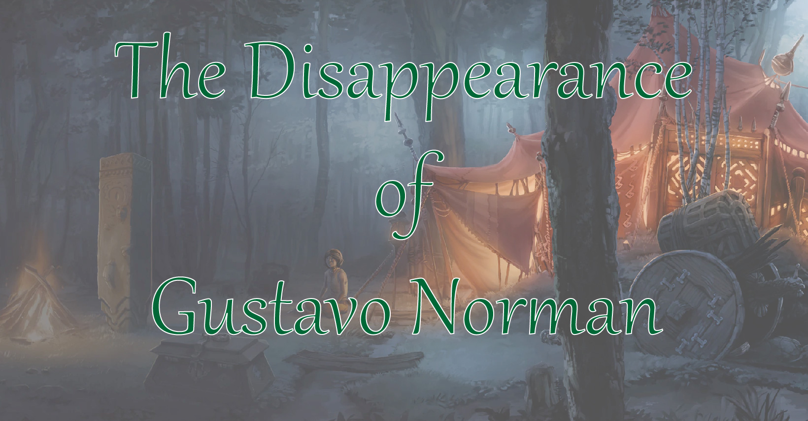

The Disappearance of Gustavo Norman
Rugatha Legends

Rugatha Legends
五名遊歷各處的冒險者被顯赫的貴族諾曼爵士 Frederick Norman 透過眼線招募來到了他的住處。諾曼爵士說明，根據他的眼線，自己成年的兒子 Gustavo 據傳一個月前在洛森王國與麥丁頓王國邊界的艾爾諾村（El’Nore）失蹤了，他和他的年輕妻子，同時也是 Gustavo 的青梅竹馬 Pamela 十分擔心，因此重金禮聘冒險者們到艾爾諾村幫忙調查 Gustavo 的下落，並承諾只要能回報給他 Gustavo 的狀況，就能領取一人 10 枚白金幣的豐厚獎賞。
五名冒險者：Jorara、My Sweet Drying Machine（以下簡稱 MSDM）、小小小 Jiaheng、Mine Quarry 與 Anedak 坐了一個月的馬車，終於抵達艾爾諾村，而車夫在放下他們後便離開了。
放眼望去，在艾爾諾村的住民幾乎都是妖精，但是仔細一看，其實他們都是半妖精。這裡與其說是村莊，更像是部落，村民都是居住在帳篷內。感到好奇的冒險者們拉了一名路人想要談話，卻發現對方不懂普通語。唯一懂妖精語的小小小 Jiaheng 便成了大家的翻譯員。路人找來了一名名為 Dosuu，懂普通語的男子，帶領冒險者。和 Dosuu 簡單交涉後，冒險者們大致知道了這裡主要的重要人物有長老（也可視為村長），同時是 Dosuu 哥哥的 Basuu，以及宗教領袖教主大人。大夥兒也從 Dosuu 那邊聽說了他最後一次見到 Gustavo 時是看見他和長老 Basuu 吵架。大家先跟隨著 Dosuu 來到了教主大人的營帳。
進入了營帳內，教主向大家自我介紹，自稱 Luny，並表示部落內的人都是月神教的忠誠信徒，部落內滿月時會舉行儀式，歡迎冒險者們一同參加。冒險者們也向教主詢問了關於 Gustavo 的狀況，他表示一兩個月前有見到過這名年輕的人類，而且他對當地的儀式也十分感興趣，但好像突然就失蹤了。
接著教主派了人帶領大家去找長老。營帳內，長老似乎正在忙著，對冒險者們的提問都不太正面回應。他表示自己見過 Gustavo，但是 Gustavo 好像不見了，他也不清楚為什麼。
在眾人離開營帳後，躲藏在營帳內的 Jorara 發現長老喚來了幾個人。雖然聽不懂妖精語，但 Jorara 用自製的工具將聲音錄了下來，並向外傳遞給了在營帳門口的小小小 Jiaheng，內容大致是長老驚訝的告訴身邊的人竟然有人在調查 Gustavo 的事，要大家小心一點。
在 Jorara 變身成狗，被人抱離營帳後，大家在部落的樹林邊討論著接下來的計畫。大家先詢問到了可以住宿的地方：一個較鮮艷的大型營帳，營帳的主人叫 Mafa。Mafa 在將自己的其他客人趕走後，簡單和冒險者們聊了聊。他表示外地人來這裡都是他安排住宿，並向冒險者們透露他也曾接待過 Gustavo。他表示 Gustavo 是個好孩子，卻因為對部落內的傳統以及儀式有所不滿，在爭吵中誤殺了前任長老而被暴民殺死。Mafa 帶著冒險者們來到了森林的深處前任長老 Nal 的墳前致意，而旁邊便是 Gustavo 的墳墓，不過他的墓碑上被人用妖精語塗鴉破壞。
Mafa 接著代冒險者們回到案發現場：滿月儀式的場地。廣場的正中央有個石製的圓形平台，散發出濃濃的血味與燒焦味。Mafa 說明平常儀式都在這裡進行，Gustavo 死時雖然不是儀式當下，但是也是在這裡和村民起衝突的。此時，教主派的人找到了冒險者們，告知他們明天晚上會有一場滿月儀式，邀請他們參加。Mafa 表示不用擔心，一是絕對不會危及他們的生命。
回到 Mafa 的大帳篷，眾人向他詢問村內滿月的儀式到底是什麼？Mafa 表示儀式的內容不太人道，他可以理解為何 Gustavo 會如此激烈的反對。而冒險者們在反覆推敲後認為儀式內容很有可能是獻祭當地的孩童。Mafa 找了三名小朋友，給了他們一人一枚金幣，請他們幫冒險者們搭帳篷。冒險者們也想起，在來到部落後，確實幾乎都沒有看到孩童。
帳篷搭好後，冒險者們和孩童們搭話，大略知道了這幾位看起來貧困的孩子住在哪裡，也簡單拜訪了一下，發現他們都家庭狀況似乎都不是太好。為了以防萬一，Jorara 在這幾名孩童的營帳前設置了警報，擔心他們被當作獻祭的對象。
接著，冒險者們也詢問到了一家賣各式雜貨、材料的小店。店的裝飾低調，裡面的老闆是一名人類—是定居在這裡的唯一一名人類。他自我介紹名為 Kojo，告誡了冒險者們在部落內要特別小心，表示因為妖精生產力低，會誘拐來到這裡的外地人，讓他們為部落產下子代。因此今晚在這裡過夜，要特別注意。Kojo 也為 Jorara 準備了他所需要的各式工具與材料。
日落後，遠比大家認知更多的半妖精紛紛從帳篷內走了出來，在部落內唱著歌活動著。冒險者們思索著該直接離開部落，還是待到隔天參與儀式。最後，冒險者們決定早點開始休息，利用半夜的時間在部落內進行調查。
大家輪流守夜，Jorara 也在營帳門口設置了警報器，卻意外被第一輪守夜的 Anedak 玩壞了。在大家都睡著後 Jorara 和 MSDM 被偷偷闖入的民眾劫走，清醒後的小小小 Jiaheng、Mine Quarry 和 Anedak 跑到了帳篷外。Anedak 到了樹林邊和附近的動物朋友溝通，請貓頭鷹們幫他找到兩位失蹤夥伴的蹤跡，並在樹下等待他們的回應。他也決定讓 Mine Quarry 和小小小 Jiaheng 先回帳篷等待。
Mine Quarry 和小小小 Jiaheng 在往營帳的路途中撞見了兩名守衛，在小小小 Jiaheng 溝通未果的情況下守衛和他們打了起來，居民們紛紛湧了上來，將兩人綑綁後抬走。
在得到了貓頭鷹的指點後，Anedak 準備前往 Jorara 和 MSDM 被綁走的地方，大約是儀式場地附近。他也從貓頭鷹給予的消息得知另外兩位夥伴似乎也遇害了。在儀式場地旁的樹丛，Anedak 小心觀察，沒發現一旁有人搭了他的肩膀，是 Kojo。
Kojo 透過心電感應傳話給 Anedak，表示自己願意來幫忙救他們。兩人觀察了前面的兩座帳篷，判斷右邊沒有人圍著的帳篷應該是 MSDM 和 Jorara 被安置的帳篷，而有一群人圍繞，正運送著東西進去的左側帳篷，很有可能就是小小小 Jiaheng 和 Mine Quarry 被運送的地方。繞到了右側帳篷旁邊，Anedak 割開了帳篷一側，兩人悄聲潛入，看見赤身裸體昏倒在地上的 MSDM 和 Jorara，以及兩名正在談天的半妖精，一男一女。成功襲擊了男子，旁邊的女半妖精卻開始尖叫，帳篷外有其他半妖精開始進入，Anedak 和 Kojo 只好趕緊把昏迷的兩人先行搬走並逃了出去，跑到了樹林邊緣。
另一方面，Mine Quarry 和小小小 Jiaheng 被放到了地上，但手腳和嘴都被綁住了。Mine Quarry 聽見了半妖精們開始頌歌，他強忍住了不自覺想跟著吟唱的心，看見一名穿著華麗的半妖精領著一名看起來富裕健全的孩童從帳篷深處走了出來，向大家致意。眾人唱著歌，隨著他們走出了帳篷外。小小小 Jiaheng 成功解開了束縛，卻像是被歌聲控制住了一般，也唱起了歌，跟著大家走了出去。Mine Quarry 好不容易解開了束縛，趕緊在帳篷內尋找武器，卻只有找到幾塊碎玻璃和石頭，便趕緊朝反方向開始逃亡。
樹林邊，MSDM 恢復了意識，Jorara 卻還在昏迷。MSDM 試圖扛起 Jorara 卻因為身體太過勞累而失敗。Anedak 提議讓 MSDM 先逃出部落，而 Kojo 將 Jorara 先藏起來。Anedak 則先在附近隨時注意現況。然而，在大家分頭離開後，Anedak 卻抵抗不住半妖精歌曲的力量，也朝著儀式現場靠近。滿月儀式似乎提前一天開始了。
MSDM 成功逃到了樹林邊界，卻聽到了大聲的警報，以及遠處傳來有人吶喊的聲音。他趕緊用自己的魔法生出了火，將四處的樹林點燃，然後繼續逃亡。
Mine Quarry 也靠著自己對野外的認知，逃進了另一側的樹林，並找到了洞穴休息。
Anedak 看見小小小 Jiaheng 也在儀式現場，卻控制不住自己的身體，無法前去救他。在儀式最後他看見大部分的半妖精都昏倒了下來，小小小 Jiaheng 還撐著身體搖晃著。模糊的意識下，他感受到了有人在搖晃著他的肩。Kojo 用力的搖晃著 Anedak，而 Anedak 終於清醒，撐著身體去拯救小小小 Jiaheng。成功將小小小 Jiaheng 搖醒後，Anedak 發現 Kojo 已經倒下，身上的傷口似乎已經沒救了。他將 Kojo 的眼睛闔上後，便帶著小小小 Jiaheng 逃入了森林。
迷迷糊糊，Jorara 醒來了。他發現自己在 Kojo 的店舖裡，附近一個人都沒有。帳篷外，只聽見了小孩的哭聲。他隨著哭聲找到了一名半妖精小女孩，而小女孩也指引了他找到另外兩名半妖精小孩子。Jorara 背著一個小孩，兩手再各牽一個，從森林逃了出去。
冒險者們紛紛逃離了艾爾諾村以及這場夢魘，幾個月後終於回到了爵士家休養，也領到了他們應得的賞金。而 Jorara 也發現了自己似乎懷有了身孕。後來，爵士也告訴冒險者，艾爾諾村，似乎消失了。
「Jorara！」
Jorara